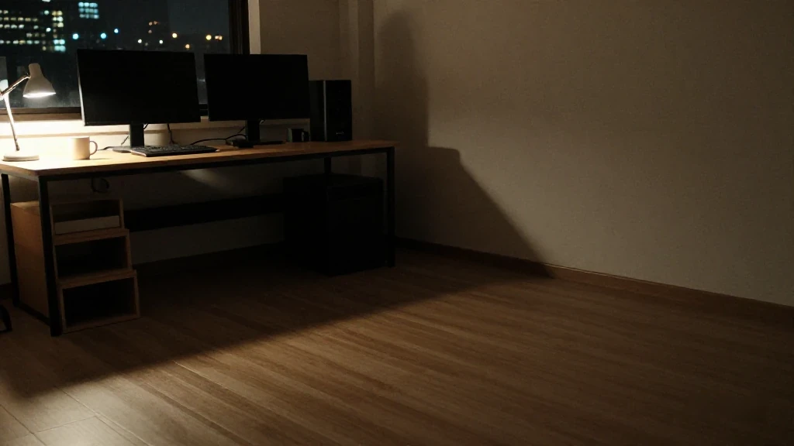
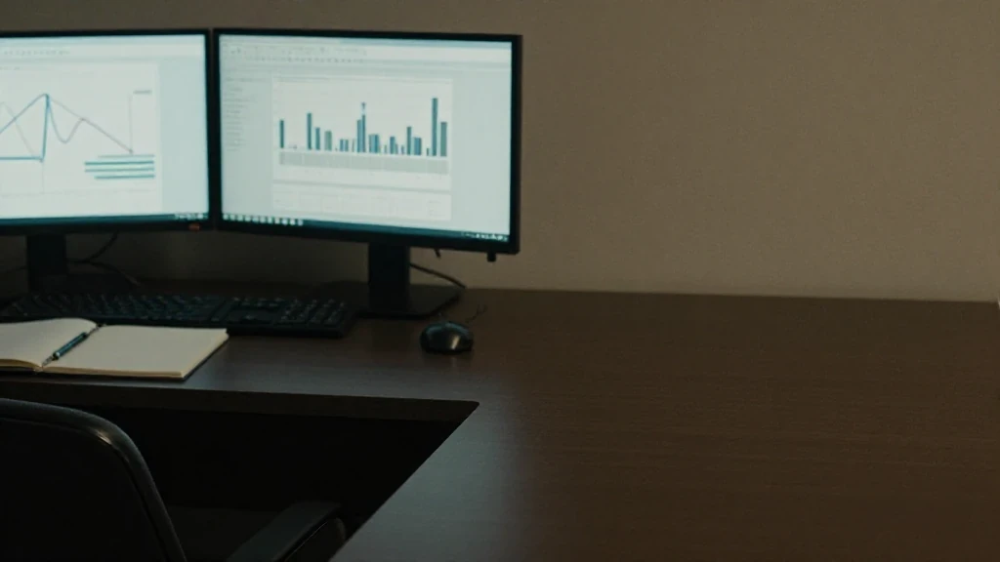
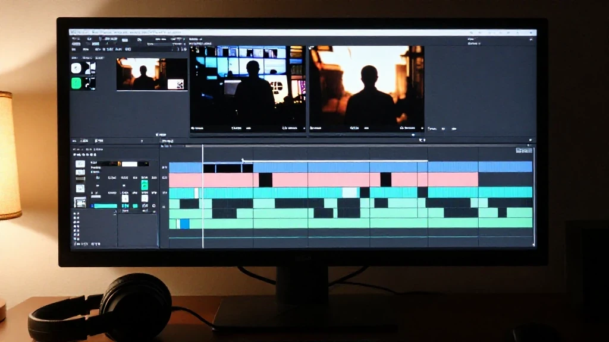

圖片由 AI輔助創作（Z-Image-Turbo）Image by AI (Z-Image-Turbo)
【一日復盤】
今日我一日做咗幾件事：GEO 工具揀邊個、獨立站點樣起、短視頻條腳本點寫，仲有部電腦跑唔跑得動 AI 換臉。趁記憶仲新，逐樣記低。
呢篇唔係教學，係我嘅工作日記。裏面有已經拍板嘅決定，有試完之後嘅判斷，亦有試完之後發現「呢條路而家行唔通」嘅部分。我唔會寫到好似好順利，因為實際上唔係。
第一幕：海外GEO——RankScope 係一個網頁，唔係一套軟件

圖片由 AI輔助創作（Z-Image-Turbo）Image by AI (Z-Image-Turbo)
GEO 同傳統 SEO 唔同。SEO 係爭搜尋結果嗰幾行，GEO 係要 AI 大模型答問題嗰陣，引用我哋獨立站嘅資料做來源。呢件事嘅根，係一個自己嘅網站。
美團、公眾號、店鋪主頁呢啲第三方平台，只可以當輔助信源，唔可以當主陣地。原因好簡單：第三方擺唔到 llms.txt，平台規則隨時改，收錄唔穩定。你喺人哋地盤，話語權唔喺你手。
海外嗰套，我用 RankScope。幾點講清楚：
- 產品屬性：網頁 SaaS 平台，冇客戶端，唔使下載安裝，Chrome 直接開 rankscope.ai 就用得。
- 使用前提：要境外網絡環境、海外郵箱註冊，用外幣信用卡按月訂閱，有 14 日試用。
- 監測範圍：ChatGPT、Gemini、Perplexity、Google AI Overview，專門服務外貿獨立站，對著海外採購客；唔會監測國內嘅豆包、DeepSeek、通義千問。
- 網站配套：獨立英文站，根目錄放兩份檔，llms.txt 同 llms-full.txt。llms.txt 寫企業基礎資料、主營產品、OEM 業務、MOQ、認證、聯繫方式，等大模型快啲讀到站嘅核心資料。robots.txt 要放開 AI 爬蟲，網站內容唔使登入就睇得到，頁面資料要保持真實一致。
- 關鍵詞策略：分開品牌詞、產品詞、買家自然問句，第一輪控制喺 30 至 80 個，分批導入，每星期掃一次慳返費用，開埋 AI 回答快照保存，用嚟核對品牌提及同連結引用。
- 底層邏輯：獨立站做主信源，配海外社媒、行業 B2B 平台做外部佐證信源，大模型會交叉核對幾方一致嘅資料，提高引用機會。
- 局限：RankScope 只做監測，唔會自動幫你生成稿件；GEO 亦保證唔到大模型 100% 引用你個站，呢件事係長期運營。
最後一點我要講多次：GEO 賣嘅係「提高機會」，唔係「保證結果」。邊個同你講包引用，你要走。
第二幕：國內GEO——靈狐 同 壯壯，我最後揀壯壯先試
圖片由 AI輔助創作（Z-Image-Turbo）Image by AI (Z-Image-Turbo)
國內嗰兩套，都係對著國內嘅大模型：豆包、DeepSeek、通義千問、騰訊元寶。
靈狐GEO（重慶靈狐科技）
- 好處：國內 GEO 行業標準參編單位，系統成熟穩定，AI 快照核驗完善，適合知識性科普內容；一個帳號可以開幾個獨立項目，分開管理幾個站；企業或個人都可以買關鍵詞套餐。
- 缺點：冇得自助網上註冊，要聯絡商務對接、人手審核開通，等嘅週期長，上手麻煩。
壯壯GEO（深圳壯壯科技）——今次我揀佢優先試
- 好處：網頁 SaaS，自助註冊，唔使人手審核，註冊完即刻開項目；後台一體化，AI 寫稿、關鍵詞挖掘、AI 監測、媒體分發都喺同一個地方。
- 媒體分發嘅邏輯：稿件先發喺自己獨立站（Vercel）做核心主信源；同一篇文章可以經系統一鍵分發去外圍第三方媒體，做外部輔助背書信源，提升可信度。分發會扣算力積分。
- 項目隔離：幾個完全唔同主體、唔同域名嘅站，後台各自開獨立 Project，關鍵詞、文章、llms.txt 完全分開，防止大模型混淆唔同主體嘅資料。
- 計費：算力積分模式，用幾多扣幾多，可以分步測試，唔使一次過大額投入。
- 短板：原生偏向工廠 B 端業務，科普內容嘅穩定性略弱過靈狐；媒體池整體權威性低一些；而且任何 GEO 都唔可以強制 AI 展示你嘅資料。
國內站點嘅配套：中文獨立站，放中文版 llms.txt，內容一定要真實，科普內容唔好誇大產品功效，要避合規風險。
有句要講清楚：上面對兩間公司嘅比較，係我自己落地用落嘅判斷，唔係第三方評測，亦唔係行業定論。兩間都係商業公司，我講嘅只係我今次嘅選擇理由。你嘅情況唔同，結論可能唔同。
第三幕：建站——Vercel 先上線，資源後遷
圖片由 AI輔助創作（Z-Image-Turbo）Image by AI (Z-Image-Turbo)
我而家已經有幾個 Vercel 獨立站。Vercel 適合起靜態獨立網站，呢點冇懸念。
但有個位要提早處理：Vercel 本身存儲空間有限。圖片、視頻呢啲資源建議剝出去，託管去騰訊雲 COS 對象存儲，減輕部署包體積，避免空間超限。
幾個網站可以放喺同一個 Vercel 帳號下面，做唔同項目；亦可以新開一個 Vercel 帳號，睇資源佔用情況決定。
部署同遷移唔使同步做。網站上線可以先行，騰訊雲 COS 嘅圖片遷移可以後置，即係「先上線、後遷移資源」嘅分步方案。呢個次序實際好多。
第四幕：短視頻——陳皮條口播，同剪映、巧影

圖片由 AI輔助創作（Z-Image-Turbo）Image by AI (Z-Image-Turbo)
內容嗰邊，今日傾咗陳皮主題嘅短視頻：寫一條 3 至 5 分鐘嘅口播腳本，主打溫情敘事，適合喺視頻號發；配套嘅文案、標題、字幕、標籤都要齊。
剪片工具試過兩個：剪映同巧影。剪映功能強啲，可以下載原視頻，去除廣告片段，呢兩點對我實際。
第五幕：硬件——N 卡要 6G 起，我部機唔夠
圖片由 AI輔助創作（Z-Image-Turbo）Image by AI (Z-Image-Turbo)
我想做嘅係 AI 換臉：把視頻入面嘅人像、聲音替換掉。方向有兩個，成本差好遠。
雲端方案：調研過騰訊雲人臉融合 API。功能係現成，但成本偏高，長期用唔化算。
本地方案：開源嘅 FaceFusion。硬件門檻寫得好清楚——一定要 N 卡，最低顯存 6G。
我部機：i5-9600KF、16G 內存、GTX1050Ti 4G。4G 對 6G 嘅門檻，差一截。GPU 跑得好慢，純 CPU 跑效率極低，實際上等於跑唔動。
所以呢件事嘅結論係：方案係通嘅，機唔夠。要麼換卡，要麼等。
另外講一句遊戲 AI。Hermes 係我自己嘅 AI agent，佢唔可以自動操控《無畏契約》——咁樣有封號風險。但用佢做遊戲復盤、學打法係安全嘅；唔可以自動操作遊戲，呢條線要劃清楚。
【今日嘅結論】
- 海外 GEO 用 RankScope，服務外貿獨立站
- 國內 GEO 優先揀深圳壯壯GEO，自助快速測試
- 以 Vercel 獨立站為根基
- llms.txt 係關鍵配置
- 主站內容加外圍媒體，做輔助信源
- 分項目隔離唔同主體
- 分步測試，控制成本
今日仲有傾到電動車硬件改裝、個人健康、文史內容幾個方向，不過重心唔喺嗰邊，呢篇唔展開。
硬件同短視頻係配套項目。硬件受部機嘅顯卡限制，本地 AI 換臉方案，以我而家嘅設備跑唔動。
最後一句，講畀自己聽：所有 AI 營銷工具，無論國內定海外 GEO，都屬於長期內容運營，冇一鍵速成。核心係持續輸出可信內容，搭建屬於自己嘅信息源。工具會換，呢件事唔會變。
圖片由 AI輔助創作（Z-Image-Turbo）Image by AI (Z-Image-Turbo)
[One Day's Recap]
Today I got several separate jobs done in one stretch: which GEO tool to use, how to stand up an independent site, how to write the short-video script, and whether my own machine can run an AI face swap at all. I am writing it down while it is still fresh.
This is not a tutorial. It is a working diary: decisions already made, judgements I reached after trying things, and the parts where I tried something and concluded it does not work yet. I will not make it read smoothly, because it was not.
One: Overseas GEO — RankScope Is a Web Page, Not a Program
圖片由 AI輔助創作（Z-Image-Turbo）Image by AI (Z-Image-Turbo)
GEO is not SEO. SEO fights for a few lines of search results; GEO is about getting AI models to cite our own site as a source when they answer a question. The root of the whole thing is a website you own.
Third-party platforms — Meituan, WeChat Official Accounts, shop pages — can only ever be supporting sources, never the main ground. The reason is simple: a third-party platform cannot host llms.txt, its rules change whenever it likes, and indexing is unstable. On someone else's land, you do not hold the say.
For the overseas side I use RankScope. The details, plainly:
- What it is: a web SaaS platform. No client, nothing to install — open rankscope.ai in Chrome and it works.
- What it needs: an overseas network environment, an overseas email address to register, a foreign-currency credit card for the monthly subscription, and a 14-day trial.
- What it watches: ChatGPT, Gemini, Perplexity and Google AI Overview — built for export sites facing overseas buyers. It does not monitor the domestic models: Doubao, DeepSeek, Tongyi Qianwen.
- What the site needs: an independent English site with two files in the root, llms.txt and llms-full.txt. llms.txt carries the company basics, main products, OEM work, MOQ, certifications and contact details, so a model can read the core of the site quickly. robots.txt must let AI crawlers in, the content must be readable without logging in, and the page information must stay true and consistent.
- Keyword strategy: keep brand terms, product terms and the natural questions buyers ask separate; hold the first round to 30–80, import them in batches, scan once a week to save cost, and switch on AI answer snapshots to check brand mentions and link citations.
- The underlying logic: the independent site is the primary source; overseas social media and B2B platforms corroborate it from outside; the models cross-check consistency across sources, which raises the chance of a citation.
- The limits: RankScope only monitors — it will not write anything for you. And GEO cannot guarantee that a model cites your site 100% of the time. This is long-term work.
That last point bears repeating: GEO sells a better chance, not a guaranteed result. Anyone who tells you citation is guaranteed — walk away.
Two: Domestic GEO — Linghu and Zhuangzhuang, and Why Zhuangzhuang Gets Tested First
圖片由 AI輔助創作（Z-Image-Turbo）Image by AI (Z-Image-Turbo)
Both domestic systems point at the same models: Doubao, DeepSeek, Tongyi Qianwen and Tencent Yuanbao.
Linghu GEO (Chongqing Linghu Technology)
- Strengths: a participating author of the domestic GEO industry standard; a mature, stable system with thorough AI snapshot verification; well suited to knowledge and explainer content. One account can hold several independent projects, so several sites stay separate. Companies and individuals can both buy keyword packages.
- Weaknesses: no self-service online registration. You contact sales, a human reviews and opens the account, the wait is long, and getting started is a chore.
Zhuangzhuang GEO (Shenzhen Zhuangzhuang Technology) — the one I picked to test first
- Strengths: web SaaS, self-service signup, no manual review, a project the moment you register. The backend is integrated: AI drafting, keyword mining, AI monitoring and media distribution all in one place.
- How the distribution works: the article goes out on your own independent site (Vercel) first, as the core source; the same piece can then be pushed to peripheral third-party media with one click as outside corroboration, which lifts credibility. Distribution consumes compute credits.
- Project isolation: several sites with entirely different entities and domains each get their own Project in the backend, with keywords, articles and llms.txt kept separate, so a model does not confuse one entity with another.
- Billing: compute credits, pay for what you use. You can test in steps without a large commitment up front.
- Shortcomings: it leans natively toward factory B2B work, so explainer content is a little less stable than on Linghu; the media pool is less authoritative overall; and no GEO product can force an AI to show your information.
On the domestic side, the site itself: a Chinese independent site with a Chinese llms.txt, content that is strictly true, explainer copy that does not overstate what the product does, and compliance risk kept in mind.
One thing needs saying plainly: the comparison above is my own judgement from actually using them. It is not a third-party review and not an industry verdict. Both are commercial vendors, and all I am giving is the reason for my choice this time. Your situation differs; your conclusion may differ too.
Three: Building the Site — Vercel Goes Live First, Assets Move Later
圖片由 AI輔助創作（Z-Image-Turbo）Image by AI (Z-Image-Turbo)
I already run several Vercel sites. Vercel suits static independent sites; there is no argument there.
But one thing has to be handled early: Vercel's own storage is limited. Images and video should be stripped out and hosted on Tencent Cloud COS object storage. That keeps the deploy package small and keeps you from hitting the space limit.
Several sites can sit under one Vercel account as separate projects, or you can open another Vercel account, depending on how much you are using.
Deploying and migrating do not have to happen together. The site can go live first and the COS image migration can follow — go live first, move assets later. That order is the practical one.
Four: Short Video — the Tangerine-Peel Script, Jianying and Qiaoying
圖片由 AI輔助創作（Z-Image-Turbo）Image by AI (Z-Image-Turbo)
On the content side, today we worked through a tangerine-peel themed short video: a three-to-five-minute talking-head script, warm and human in tone, suited to WeChat Channels, with the copy, title, subtitles and tags all finished to match.
Two editors were tried: Jianying (剪映) and Qiaoying (巧影). Jianying is the stronger of the two — it can download the source video and strip the ad segments, and those two things matter to me in practice.
Five: Hardware — an N Card With 6 GB, and Mine Falls Short
圖片由 AI輔助創作（Z-Image-Turbo）Image by AI (Z-Image-Turbo)
What I want to do is a face swap: replace the face and the voice inside a video. There are two routes, and the cost differs enormously.
Cloud: I looked into Tencent Cloud's face-fusion API. The capability is ready-made, but the cost per use is high and it does not pay off over the long run.
Local: the open-source FaceFusion. Its hardware threshold is stated plainly — an N card is mandatory, with at least 6 GB of VRAM.
My machine: an i5-9600KF, 16 GB of RAM, a GTX1050Ti with 4 GB. Four gigabytes against a six-gigabyte floor. On the GPU it crawls; on CPU alone the efficiency is hopeless. In practice it will not run.
So the conclusion on this one is: the method works, the machine does not. Either change the card or wait.
One more note, on game AI. Hermes is my own AI agent. It cannot drive Valorant for me — automating play carries a ban risk. What it can safely do is review matches and help me study how a game is played. It must not operate the game itself; that line has to be drawn clearly.
[What Today Came Down To]
- Overseas GEO runs on RankScope, serving export sites
- Domestic GEO: Shenzhen Zhuangzhuang first, for fast self-service testing
- The Vercel independent site is the foundation
- llms.txt is the key configuration
- Main-site content plus peripheral media as supporting sources
- Separate projects to keep separate entities apart
- Test in steps, control the cost
I also talked through electric-scooter hardware modification, personal health and history-and-culture content today, but the centre of gravity was elsewhere, so I will not spread them out here.
Hardware and short video are supporting projects. Hardware is capped by the card in this machine: with the equipment I have, the local face-swap route does not run.
And one last line, said to myself: every AI marketing tool, domestic GEO or overseas, is long-term content work. There is no one-click version. What matters is putting out credible content, continuously, and building an information source that belongs to you. Tools change; that does not.